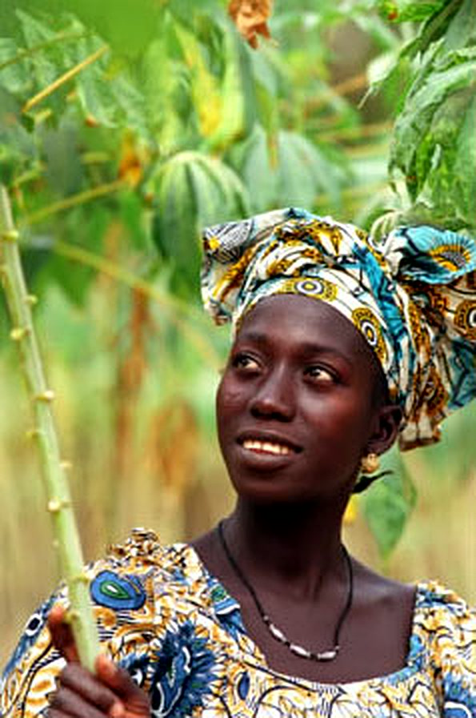
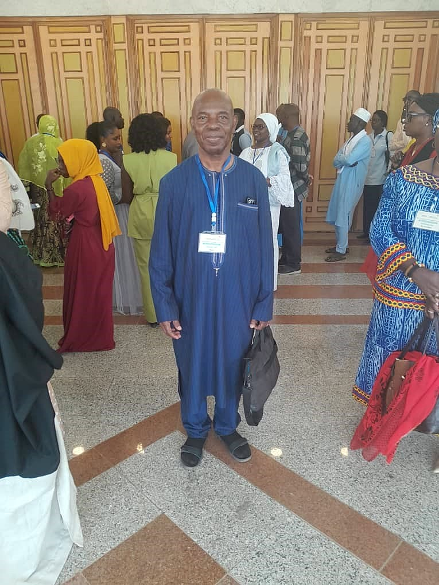
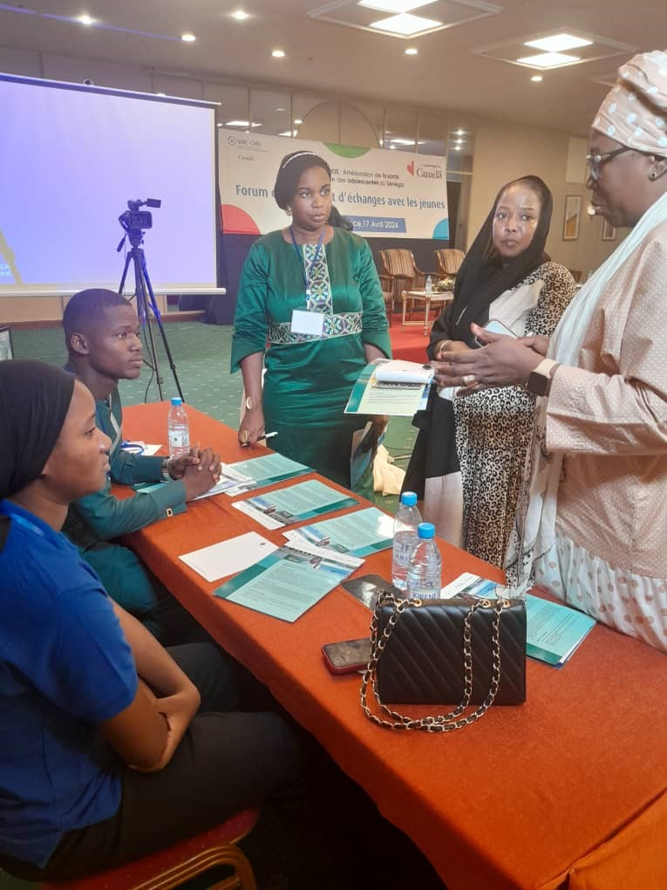
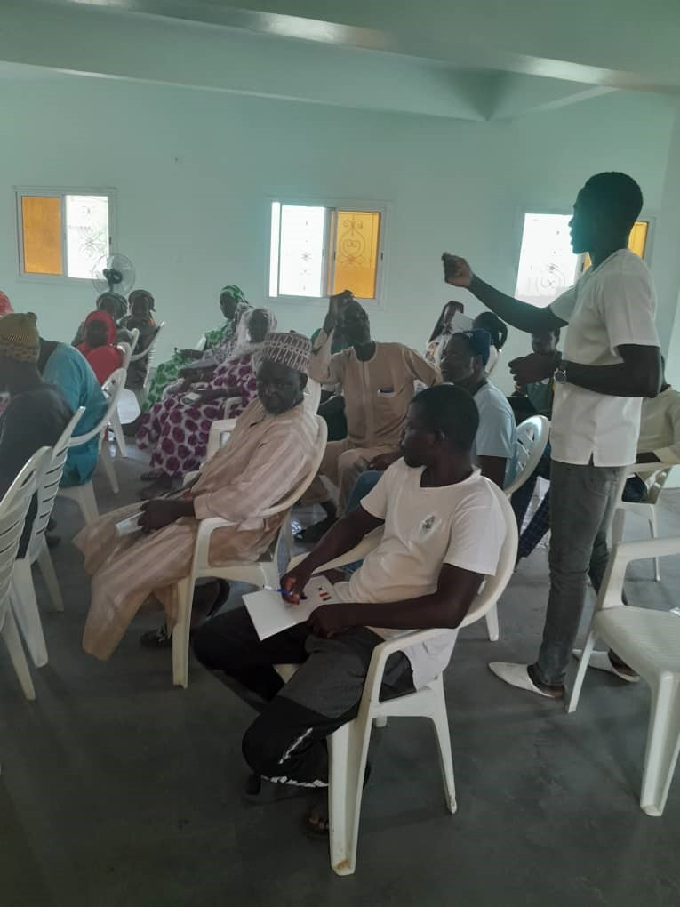

Bailleurs & financeurs
- 01
Fondation Ford - 02
CRDI - 03
FIDA - 04
BAD - 05
KOICA - 06
ITC - 07
Ville de Lyon - 08
La Guilde
Bienvenue dans la transformation rurale
Site officiel | West African Rural Foundation

Découvrez comment la FRAO bâtit de la valeur durable grâce à des stratégies et partenariats.



D'expérience cumulée au service des communautés rurales.
Contribuer à la sécurité alimentaire et à la réduction de la pauvreté des populations rurales en Afrique de l'Ouest et du Centre, notamment des femmes et des jeunes.
En savoir plusGarantir aux populations rurales un accès durable à une alimentation saine et suffisante.
Promouvoir des filières inclusives, rentables et résilientes au service des exploitations familiales.
Accompagner les acteurs ruraux face aux effets du changement climatique par l'agriculture intelligente.
Renforcer les organisations locales et la territorialisation des politiques publiques.
Nos équipes sont à votre disposition pour toute demande de partenariat, de collaboration ou d'information.
Sacré Cœur 3 — VDN
Villa N°10075
Dakar - Fann, Sénégal
CP 13 Dakar
NINEA : 006 4 3610V0
Organisation à but non lucratif
Siège : Dakar, Sénégal